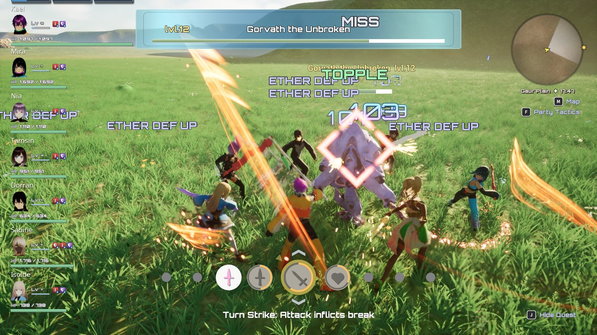

Welcome to XenoCore¶
All · 5 min · No code

The sample party fighting Gaur Plain's Unique monster: auto-attacks, an Art from the palette, a Topple.
XenoCore is a framework for party-based, real-time RPG combat and menus, built as a Game Feature plugin on Epic's Lyra sample for Unreal Engine 5.8. You control one member of a party of up to seven while the others fight beside you. Characters auto-attack, you choose Arts from a palette, and Arts chain enemies through Break, Topple and Daze. Around the combat sits the rest of an RPG: equipment, loot, levelling, NPCs, quests, shops and saving.
What you get¶
| Area | Included |
|---|---|
| Party | A roster of members, a party of up to seven (a setting; the sample starts with two and recruits five more), reserves, leader swapping in and out of battle, party tactics, follow and combat AI, downed members revived with the Party Gauge |
| Combat | Auto-attack, target lock, weapon draw and sheathe, hit reactions, damage numbers, hit feedback |
| Arts | Data-driven Arts and Talent Arts, cooldowns, the combat palette, the Arts menu |
| Reactions and statuses | The Break, Topple, Daze chain, and status effects with icons and popups |
| Stats and progression | Strength, Ether, Agility, defences, weight; experience per character, reserve experience, level-ups, skill trees |
| Equipment and items | Six equipment slots per character, a shared party bag, weapon types with their own animation sets, gems in sockets, Common / Rare / Legendary rarity, sortable lists |
| Enemies | An enemy base with its own StateTree AI, sight/sound/ether detection, squads on respawning spawners, arts, experience rewards and drop tables, and seven sample enemy types |
| Loot | Treasure chests that persist and roll their contents when opened, drop tables per enemy family with level bands, and a Take All / Take None panel |
| World interaction | NPCs, conversations with a framing camera, recruiting party members by talking, a quest system with offers, log, HUD tracker and rewards, shops and trades |
| World | A day/night clock, per-area weather, area music slots, a minimap with the time and weather on it |
| Front end | Boot screens, title screen, save slots, autosave and save points, tutorial cards |
| Menus and HUD | A full CommonUI menu suite and HUD, with gamepad and keyboard prompts |
| Sample content | Seven VRoid party members, seven enemy types, weapons, armour, gems, the Gaur Plain sample map with seven quests, and a test gym |
Nearly everything a designer does is data: make a child of a XenoCore base Blueprint (or duplicate a sample data asset), change its settings, press Play. The recipes walk through the common tasks, and Child or duplicate? says which to use when.
What it isn't¶
- Not a finished game. There is no story, and the sample numbers (enemy stats, prices, rewards) are placeholders to tune, not a balanced game.
- Single-player only. Nothing is built for networking or replication.
- Built on Lyra, and needs it. XenoCore is a Lyra Game Feature plugin; it does not run in a project without Lyra. You bring a Lyra Starter Game project (free) and drop the plugin into it. The sample party also needs the free VRM4U plugin; see Install.
- Delivered as C++ source. The first time you open the project, Unreal compiles XenoCore, so you need Visual Studio 2022 installed (Lyra is a C++ project too). After that, most work needs no code at all.
- No music in the box. The sample map's music slots are empty; add your own tracks (see Area music).
The full list is on Known limitations, and common questions are answered in the FAQ.
Where to start¶
Follow Getting Started in order. It takes under two hours and ends with your own Art and your own enemy in the game.